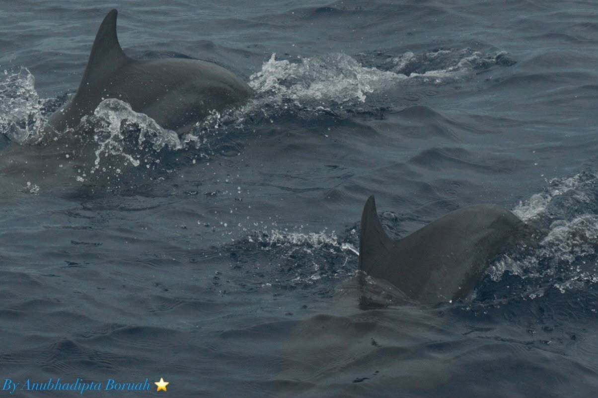

Hie I am Anubhadipta Boruah.˖°📷 ༘
Jack of all trades, master of none. But often times, better than a master of one.𓆝 𓆟 𓆞
Somewhere between the forest and the stars.͙͘͡★
A collector of stories, stars, oceans, photographs, wild places, late-night thoughts, and things that make life feel a little more magical.⋆˚꩜｡
This is my Digital Collection of thing that describe as a person. ♡₊˚ 🦢・₊✧
